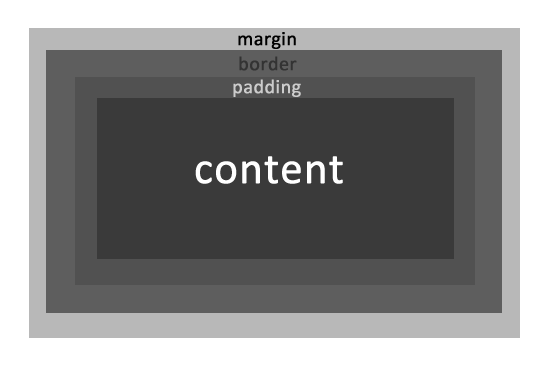

When you are writing HTML for any website, one of the basic requirements is the ability to group related areas of the design together for layout purposes (e.g. Masthead, Navigation, Content). The <div> tag in HTML has traditionally been used for this purpose
DIV is short for division and is used to represent as section or group of related content. It is helpful to think of <div> tags as containers for related content. Note: newer versions of HTML include the more semantic <section> tag, however this is not currently supported by all browsers.
The <div> is a two sided or container tag, like the <p> tag. This simply means that there is an opening <div> tag and a closing </div> tag, inside of which other HTML tags can be placed. Consider the following example of an employee bio.
<div>
<h2>Stanley Cooper</h2>
<p>Accountant</p>
<img src="stan.jpg" alt="Stanley Cooper" />
</div>While the div tag is useful for grouping related content together, it is not very descriptive by itself. In the previous example, we are grouping together 2 paragraphs and an image that are part of a biography. We can use the class attribute to add a custom class to describe the content. You can use any class names you would like, but they must consist only of letters, numbers, dashes and underscores.
<div class="employee">
<h2 class="name">Stanley Cooper</h2>
<p class="title">Accountant</p>
<img src="stan.jpg" alt="Stanley Cooper" />
</div>You can re-use the same class multiple times within an HTML page. Consider a list of employees. Re-using the "employee" class would allow us to use css to define how all of our employees should look.
<div class="employee">
<h2 class="name">Stanley Cooper</h2>
<p class="title">Accountant</p>
<img src="stan.jpg" alt="Stanley Cooper" />
</div>
<div class="employee">
<h2 class="name">Richard Stern</h2>
<p class="title">Sales Representative</p>
<img src="richard.jpg" alt="Ricahrd Stern" />
</div>The CSS selector for class is the period followed by the class name. We could create the following CSS to bold all employee names and italicize all job titles. The HTML is repeated below as a reminder.
.name {
font-weight: bold;
}
.title {
font-style: italic;
}<div class="employee">
<h2 class="name">Stanley Cooper</h2>
<p class="title">Accountant</p>
<img src="stan.jpg" alt="Stanley Cooper" />
</div>
<div class="employee">
<h2 class="name">Richard Stern</h2>
<p class="title">Sales Representative</p>
<img src="richard.jpg" alt="Ricahrd Stern" />
</div>While the class attribute can be re-used (employees, phone numbers, etc.), any ID value can only be used once on a single page. The ID attribute should be used for areas of a page such as masthead, primary content, footer, etc. or any time an element on a page is unique. In the employee example, we could use unique id attributes to differentiate between employees.
<div id="stanley-cooper" class="employee">
<h2 class="name">Stanley Cooper</h2>
<p class="title">Accountant</p>
<img src="stan.jpg" alt="Stanley Cooper" />
</div>
<div id="richard-stern" class="employee">
<h2 class="name">Richard Stern</h2>
<p class="title">Sales Representative</p>
<img src="richard.jpg" alt="Ricahrd Stern" />
</div>The ID selector in CSS is the pound symbol (#) followed by the id value. Consider the following CSS to highlight only Stan's employee listing in yellow.
#stanley-cooper {
background-color: yellow;
}
<div id="stanley-cooper" class="employee">
<h2 class="name">Stanley Cooper</h2>
<p class="title">Accountant</p>
<img src="stan.jpg" alt="Stanley Cooper" />
</div>
<div id="richard-stern" class="employee">
<h2 class="name">Richard Stern</h2>
<p class="title">Sales Representative</p>
<img src="richard.jpg" alt="Ricahrd Stern" />
</div>CSS Selectors can be combined by placing a space between them in order to specify that the selector to the right of the space should only be applied if it is found inside the selector to the left. For example, if we want to change Richard's job title to the color red, we could use the following css:
#richard-stern .title {
color: red;
}
<div id="stanley-cooper" class="employee">
<h2 class="name">Stanley Cooper</h2>
<p class="title">Accountant</p>
<img src="stan.jpg" alt="Stanley Cooper" />
</div>
<div id="richard-stern" class="employee">
<h2 class="name">Richard Stern</h2>
<p class="title">Sales Representative</p>
<img src="richard.jpg" alt="Ricahrd Stern" />
</div>CSS allows you to specify the dimensions of an HTML element using the width and height properties, which take a value in the form of number + unit.
width: 50%width: 200pxheight: 200pxCSS also allows you to set the minimum or maximum width of elements using the min-width/min-height & max-width/max-height properties. Combining these values with % based widths allows you to create liquid layouts that stretch based on the browser width but will never stretch below or above a certain threshold. For example, here is some CSS that would allow an element to take up 50% of the width of the page, but never be smaller than 200 pixels or larger than 600 pixels
width: 50%;
min-width: 200px;
max-width: 600px;
There are two types of spacing available in CSS: Margins and Padding. Margins are the spaces between two HTML elements (for example, paragraphs have margin on the bottom). Padding is the space within an HTML element. Another way to think about it is that margin is outside of an HTML element and padding is inside the element.
There are 4 margin properties in CSS for setting individual margins: margin-top, margin-bottom, margin-left and margin-right. The expected value for these properties is a number and a unit with no space between (e.g. 10px or 25em).
margin-top: 0;
margin-bottom: 10px;
margin-left: 50px;
margin-right: 20em;
Note: Once again, the borders are to help visualize the margins.
div {
margin-bottom: 50px;
}<div>Div A</div>
<div>Div B</div>When you want to horizontally center an entire HTML element, you give it a specific width and set its left and right margins to the value auto. If you think about the width, you cant center an element if its 100% wide (which is the default). Note: This is not the same as centering text, which is done using the css rule text-align: center.
div {
width: 200px;
margin-left: auto;
margin-right: auto;
margin-bottom: 20px;
}<div>Div A</div>
<div>Div B</div>You can also specify all 4 margins at once with the margin shorthand in the format 'top right bottom left'.
margin: 5px 10px 15px 5px;margin-top: 5px;
margin-right: 10px;
margin-bottom: 15px;
margin-left: 5px;Or using the format 'top-and-bottom left-and-right'.
margin: 5px 10px;margin-top: 5px;
margin-bottom: 5px;
margin-right: 10px;
margin-left: 10px;margin: 0 auto;margin-left: auto;
margin-right: auto;Just like margins, there are 4 padding properties in CSS for setting individual padding: padding-top, padding-bottom, padding-left and padding-right. The expected value for these properties is a number and a unit with no space between (e.g. 10px or 25em). There is also a shorthand padding property that function the same as the margin property.
padding-top: 0;
padding-bottom: 10px;
padding-left: 50px;
padding-right: 20em;
padding: 100px;
Notice how the padding goes inside the div instead of outside like margins. Margin and padding are often used together.
div {
padding-bottom: 50px;
}<div>Div A</div>
<div>Div B</div>Since margin is added outside an HTML tag and padding is added inside, they can be used together. In this example, a background color is included to help visualize the difference between margin/padding. The following code adds 10 pixels of margin to the bottom of each div and 30 pixels of padding to all sides.
div {
background-color: #666666;
margin-bottom: 10px;
padding: 30px;
}<div>Div A</div>
<div>Div B</div>Margin auto, width and padding can be used together to create a centered effect and is used for buttons/callouts.
div {
margin: 0 auto;
margin-bottom: 10px;
background-color: #666666;
padding: 30px;
width: 300px;
}<div>Div A</div>
<div>Div B</div>Similarly to margin and padding, there are 4 border properties for setting individual borders: border-top, border-bottom, border-left and border-right. The expected value for these properties is a number and a unit with no space between (e.g. 10px or 25em) then the border type (solid, dotted or dashed) and then the color (keyword, hex or rgb).
border-right: 5px solid red;
border-left: 10px dotted #000000;
border-bottom: 4em dashed rgb(255, 255, 255);
border-top: 10px solid #CCCCCC;
div {
border-top: 1px solid green;
border-bottom: 1px solid purple;
border-left: 2px dashed red;
border-right: 2px dotted orange;
}To specify the same border on every side, you can use the border shorthand border and give it the same value you provide to the top, left, right or bottom properties.
div {
border: 5px solid yellow;
}The CSS display property controls how an HTML element is displayed in terms of visibility, width and line breaks.
display: block;display: inline;display: none;Note: Borders are only to help you visualize the layout of the div tags.
div {
display: block;
}<div>Div A</div>
<div>Div B</div>
<div>Div C</div>Note: Borders are only to help you visualize the layout of the div tags.
div {
display: inline;
}<div>Div A</div>
<div>Div B</div>
<div>Div C</div>Note: Yes, this is correct. Display none will hide a div completely.
div {
display: none;
}<div>Div A</div>
<div>Div B</div>
<div>Div C</div>Links in HTML (the <a> tag) have 4 stylable states: Unvisited, Visited, Hover and Active. These are styled using the CSS pseudo selector, which is a colon, as follows
It is common to add/remove underlines from text as a link indicator, which is done through the text-decoration property, which can be set to underline or none. To remove underline from all links and set unvisited links to black, visited links to red, hover state to blue and active to green you would use the following css.
a {
text-decoration: none;
}
a:link {
color: black;
}
a:visited {
color: red;
}
a:hover {
color: blue;
}
a:active {
color: green;
}